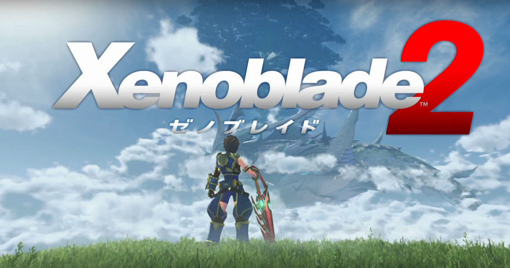
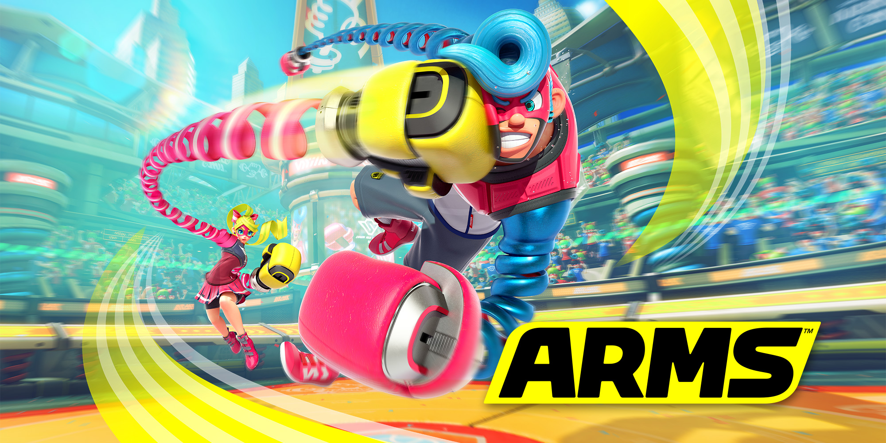
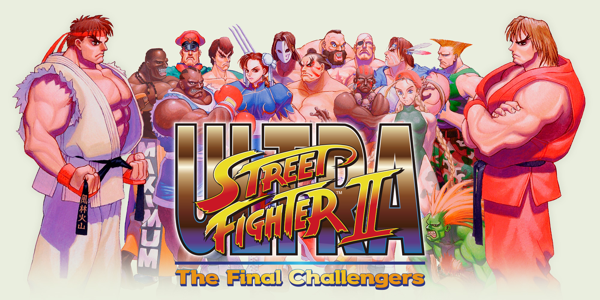
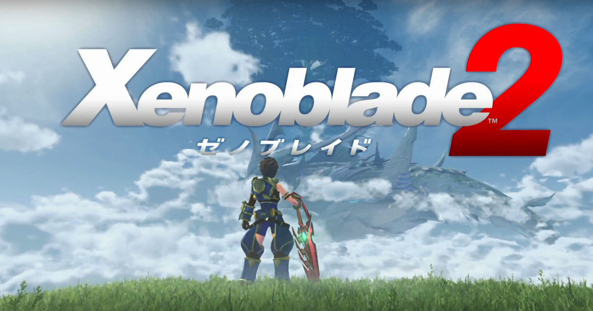
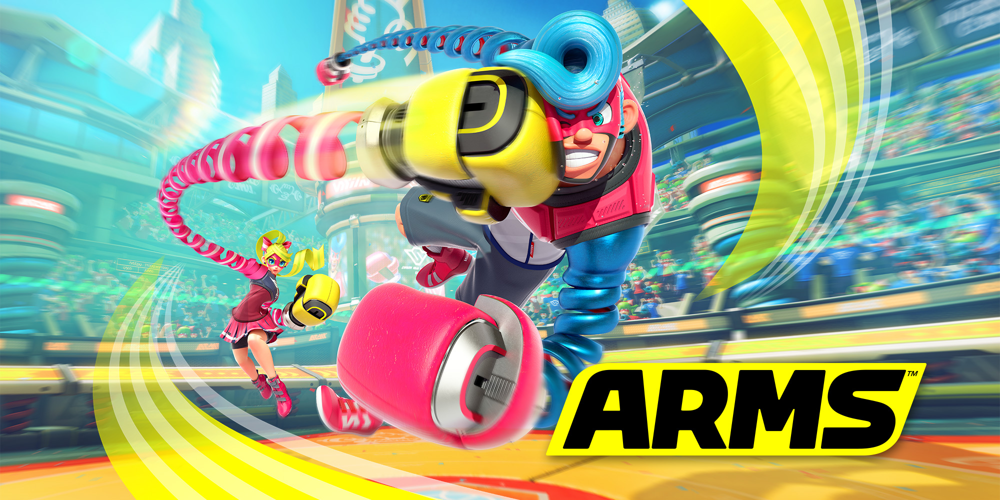
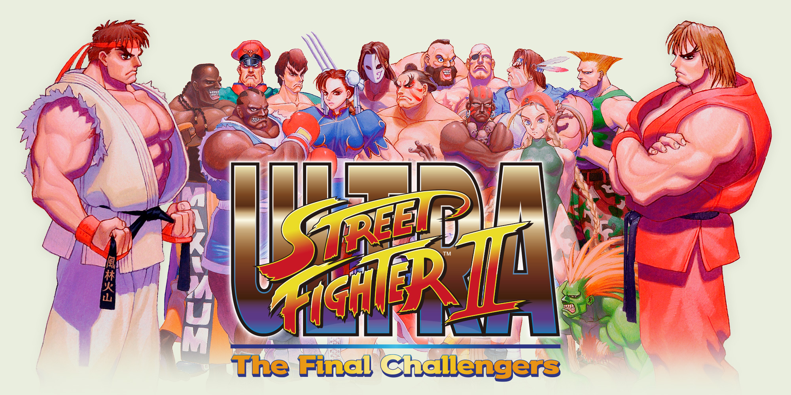

La consola fue anunciada el 17 de marzo de 2015 en una conferencia de prensa para anunciar una colaboración entre Nintendo y DeNA. El 27 de abril de 2016, Nintendo anunció su intención de lanzarla el 3 de marzo de 2017 junto al videojuego The Legend of Zelda: Breath of the Wild para Wii U, teniendo un lanzamiento intergeneracional y simultáneo como ya ocurrió en 2006 con The Legend of Zelda: Twilight Princess, pero también se informó que la consola no sería mostrada en el E3 de 2016, siendo presentada más tarde en ese mismo año.
 





The Legend of Zelda: Breath of the Wild es el título oficial del videojuego de acción-aventura de la serie The Legend of Zelda, desarrollado por Nintendo EPD (división de Nintendo creada por la unión de Nintendo EAD, Nintendo Software Planning y Development), en colaboración con Monolith Soft para Wii U y Nintendo Switch.
Xenoblade Chronicles, originalmente aparecido en Wii en 2010, trata sobre el conflicto entre dos titanes legendarios, Bionis y Mechonis, que combatieron sin fin hasta quedar congelados y convertirse en el mundo entero. Miles de años después, los hombres viven en Bionis y las máquinas en Mechonis, quienes luchan en una cruenta guerra sin cuartel por la supremacía.
ARMS es un juego de lucha en el que usarás brazos mecánicos extensibles para dar puñetazos y noquear a tus rivales. Prepárate para dar guerra y lucha en la piel de pintorescos personajes para convertirte en el número uno. Tu luchador se moverá al ritmo de tus manos mientras repartes todo tipo de puñetazos y otros movimientos pugilísticos.
Reaviva tu espíritu luchador con un clásico donde los haya: ULTRA STREET FIGHTER II: The Final Challengers, solo en Nintendo Switch. Celebra el 30.º aniversario de la aclamada serie luchando en cualquier momento y lugar: reta a quien ose medirse contigo en esta versión definitiva del emblemático juego de lucha de Super Nintendo que cautivó al mundo entero.